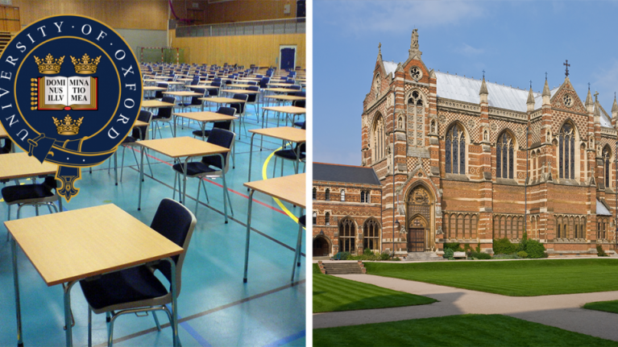
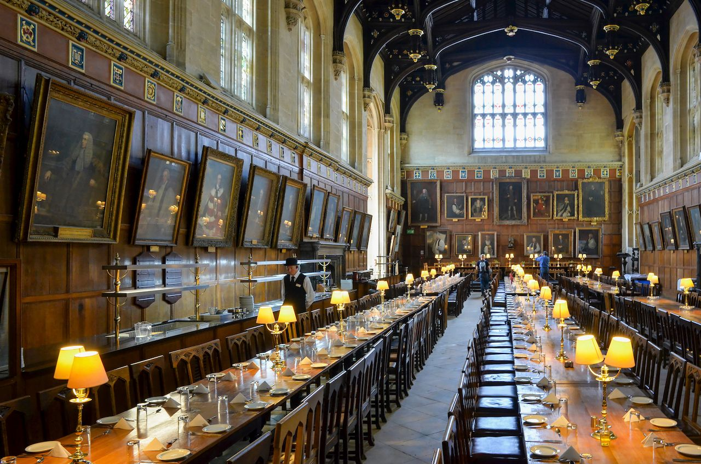
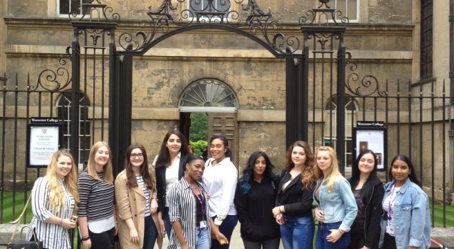

Educacion Superior
Universidad Oxford
La Universidad de Oxford es una universidad de investigación ubicada en Oxford, Reino Unido. Aunque no se conoce la fecha exacta de su fundación, hay evidencias de una institución de enseñanza ya en 1096,7 lo que la convierte en la universidad de habla inglesa más antigua del mundo y la segunda más longeva que sigue abierta.78 La universidad creció rápidamente desde 1167 cuando Enrique II de Inglaterra prohibió que los estudiantes ingleses asistieran a la Universidad de París

La universidad está compuesta de varias instituciones, 38 colleges constituyentes y un amplio abanico de departamentos académicos que están organizados en cuatro divisiones.12 Todos los colleges son instituciones con autogobierno dentro de la universidad, controlan sus miembros y tienen su propia estructura interna y actividades.13 Oxford es una ciudad universitaria que no cuenta con un campus principal, pues sus edificios y facultades están repartidos por todo el centro de la ciudad.

Oxford ha educado muchos alumnos destacados, incluyendo 29 galardonados con el premio Nobel, 27 Primeros Ministros del Reino Unido e innumerables jefes de estado y de gobierno de todo el mundo.19 A fecha de 2017, 69 ganadores del premio Nobel, 3 Medallas Fields y 6 ganadores del Premio Turing han estudiado, trabajado o colaborado con la Universidad de Oxford. Sus alumnos han logrado 160 medallas olímpicas.20 Oxford además concede la Beca Rhodes, una de las becas internacionales más antiguas
